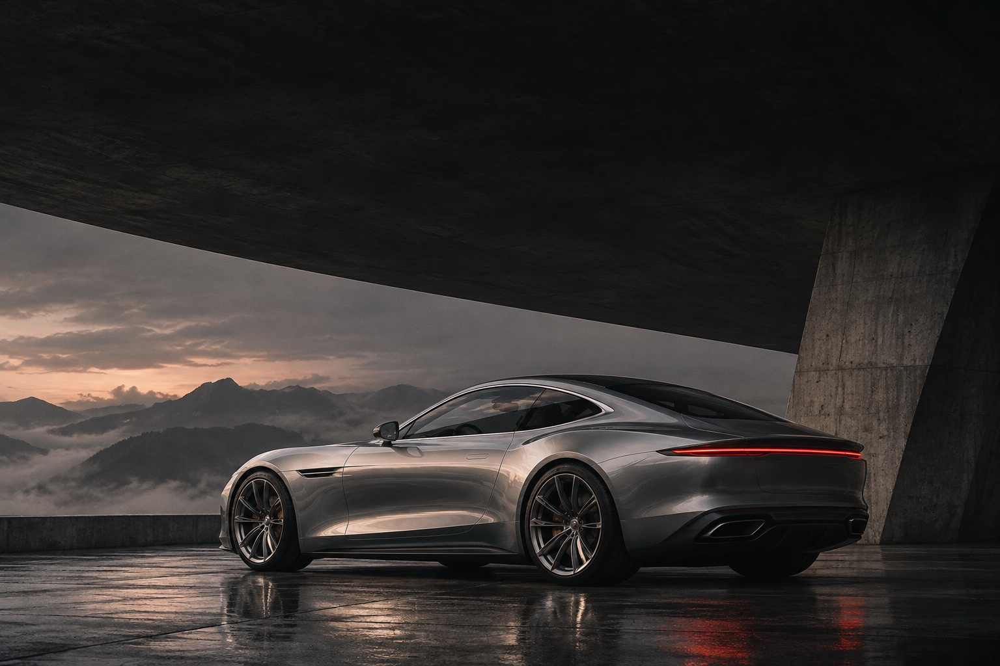
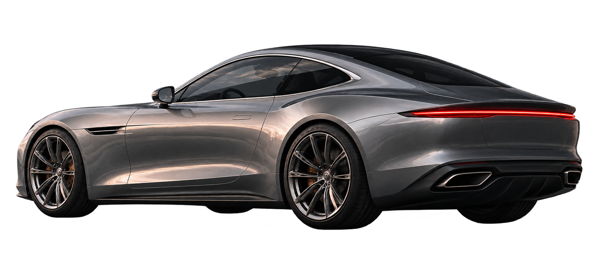

ASTRA / A01 GRAND TOURER
Nothing
unnecessary.
THE BEAUTY OF LESS
Not louder.
More considered.
A long silhouette. A quiet confidence. A grand tourer imagined around the space between the everyday and the extraordinary.
02 / THE PERSONAL COMMISSION
A01 — DESIGN STUDYYour signature.
Choose a finish. Set the character.

EXTERIOR DESIGN VISUALIZATION
Lunar silver / Touring
An unhurried grand tour. Composed and effortless.580CONCEPT HORSEPOWER
3.80–100 KM/H · CONCEPT
A01ONE DISTINCT POINT OF VIEW
03 / THE PHILOSOPHY
Designed for
the long way home.
The journey is the occasion. Every line has a purpose; every choice is yours. This is a fictional automotive commission, imagined without compromise.
Return to your commission ↗YOUR BRAND COULD FEEL LIKE THIS
An impression.
That stays.
Create your own with JEM ↗An original design study by JEM Web Solutions. Fictional brand, illustrative imagery and specifications. No purchases or bookings are made in this demo.